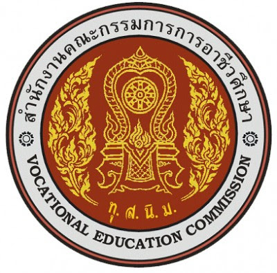

ที่ตั้ง
เลขที่ 193 หมู่ 3 ถนนสุขุมวิท ต.นาจอมเทียน อ.สัตหีบ จ.ชลบุรี มีเนื้อที่ 64 ไร่ 3 งาน 20 ตารางวา
การจัดตั้ง
วิทยาลัยเทคนิคสัตหีบ สังกัดกองวิทยาลัยเทคนิค กรมอาชีวศึกษา กระทรวงศึกษาธิการ ได้จัดตั้งขึ้นตามข้อตกลงระหว่างรัฐบาลไทยกับรัฐบาลสาธารณรัฐออสเตรีย
โดยรัฐบาลสาธารณรัฐออสเตรีย เสนอให้ความช่วยเหลือด้านวิชาการ เครื่องจักร เครื่องมือ และคณะผู้เชี่ยวชาญมาช่วยให้คำแนะนำเกี่ยวกับการติดตั้งการทำงานของเครื่องจักรกลและการฝึกอบรม
นักเรียน นักศึกษา ส่วนรัฐบาลไทย เป็นผู้จัดหาที่ดินทำการก่อสร้างอาคารเรียนโรงฝึกงาน และสิ่งก่อสร้าง อื่น ๆ ตามที่ทั้งสองฝ่ายเห็นชอบ
วัตถุประสงค์
1. เพื่อผลิตช่างเทคนิคให้สอดคล้องกับความต้องการของสถานประกอบการ
2. เพื่อให้นักเรียนนัก-ศึกษา เกิดทักษะตรงกับมาตราฐานช่างเทคนิค และสถานประกอบการ
3. เพื่อพัฒนาแผนการเรียนการสอนกับช่างอุตสาหกรรมให้สอดคล้องกับการพัฒนา ในภาคตะวันออก
ประวัติสถานศึกษา
วิทยาลัยเทคนิคสัตหีบก่อตั้งเมือวันที่ 1 กันยายน พศ. 2512 ภายใต้โดยความร่วมมือระหว่างรัฐบาลไทยและรัฐบาลสาธารณรัฐออสเตรียในสมัยนั้น ใช้ชื่อภาษาอังกฤษว่า
Thai-Austrian Technical School. ภาษาไทยคือ โรงเรียนเทคนิคสัตหีบ ณ บ้านอำเภอ ต.นาจอมเทียน อ.สัตหีบ จ.ชลบุรี มีเนื้อที่ทั้งสิ้น 64 ไร่ 3 งาน 20 ตารางวา โดยประเทศไทยจัด
หาสถานที่ก่อสร้างอาคารเรียน อาคารฝึกงาน และรัฐบาลสาธารณรัฐออสเตรียให้การสนับสนุนด้านเครื่องมือเครื่องจักร ส่งผู้เชี่ยวชาญเข้ามาช่วยเหลือฝึกอบรมการใช้เครื่องมือเครื่องจักรในการจัดเรียนการ
สอนให้กับครูและนักเรียน รวมถึงให้ทุนฝึกอบรมกับครูไทยในการเข้าฝึกอบรม ณ ประเทศออสเตรีย
วันที่ 11 ตุลาคม พ.ศ. 2520 กรมอาชีวศึกษาได้จัดพิธีรับมอบอุปกรณ์ให้กับโรงเรียนเทคนิคสัตหีบ อย่างเป็นทางการโดย Mr.Kari Peterlik เอกอัครราชทูตออสเตรียประจำประเทศไทย
ผู้แทนรัฐบาลสาธารณรัฐออสเตรีย เป็นผู้มอบ นายภิญโญ สาธร รัฐมนตรีกระทรวงศึกษาธิการ ในขณะนั้นเป็นผู้แทนรัฐบาลไทยเป็นผู้รับมอบ
วันที่ 2 สิงหาคม พศ.2522 กระทรวงศึกษาธิการประกาศยกระดับสถานศึกษาจากโรงเรียนเทคนิคสัตหีบเป็นวิทยาลัยเทคนิคสัตหีบใช้ชื่อภาษาอังกฤษว่าThai-Austrian Technical College(TATC)
ในปีพุทธศักราช 2527 เนื่องในโอกาสที่กรุงเทพมหานครครบรอบ 200 ปี สาธารณรัฐออสเตรียได้บริจาคเครื่องจักรและอุปกรณ์เพิ่มเติมให้แก่วิทยาลัยเทคนิคสัตหีบ รวมมูลค่า 2 ล้านบาท
วันที่ 12 กุมภาพันธ์ พ.ศ.2533 ได้มีการลงนามในบันทึกข้อตกลง ระหว่าง Mr.Hoch Lenitner ผู้แทนระดับสูงของรัฐบาลสาธารณรัฐออสเตรีย ร่วมกับนายบุญเทียมเจริญยิ่ง อธิบดีกรมอาชีวศึกษาและ
ผู้แทนรัฐบาลไทย เพื่อสานต่อวิทยาลัยฯ ในโครงการให้ความช่วยเหลือ ตั้งแต่ปี 2533 ถึง 2537 โดยมี ฯพลฯ Dr.Alois Mock รัฐมนตรีว่าการกระทรวงต่างประเทศของออสเตรียร่วมเป็นสักขีพยานโครง
การนี้ได้แบ่งการจัดส่งเครื่องจักรอุปกรณ์ออกเป็น 4ระยะดังนี้
- ระยะที่ 1 เดือนสิงหาคม พ.ศ.2533 จัดส่งอะไหล่และอุปกรณ์บางอย่างมาเพื่อช่วยซ่อมเครื่องจักร อุปกรณ์เดิมที่ซึ่งชำรุดและเพิ่มเติมอุปกรณ์และเครื่องจักรคิดเป็นเงิน 2,477,450.62 บาท
และวันที่ 19 พฤศจิกายน พ.ศ. 2533 มอบเงินจำนวน 991,872.52 บาท ให้วิทยาลัยฯ ดำเนินการซื้อเครื่องจักรอุปกรณ์ภายในประเทศ
- ระยะที่ 2 เดือนกุมภาพันธ์ พ.ศ.2533 ได้จัดส่งอะไหล่และอุปกรณ์เพิ่มเติมเป็นเงิน 8,335,934.74 บาท
- ระยะที่ 3 เดือนพฤษภาคม พ.ศ.2539 จัดส่งเครื่องจักรอุปกรณ์ ที่ทันสมัยเป็นเงิน8,335,160.66 บาท และผู้เชี่ยวชาญจำนวน 4 คน มาดำเนินการติดตั้งอุปกรณ์ และแนะนำการใช้
- ระยะที่ 4 เดือนกันยายน พ.ศ.2539 จัดส่งเครื่องจักรอุปกรณ์ที่ทันสมัยมาเพิ่มเติมในส่วนที่เหลือและจะมีผู้เชียวชาญมาปฏิบัติหน้าที่อีกประมาณ 5-6 คนและจัดพิธีมอบ
เครื่องจักรเครื่องมือชุดใหม่ตามโครงการให้ความช่วยเหลือครั้งที่ 2 ในวันที่ 2 พฤศจิกายน พ.ศ.2539 คณะผู้เชี่ยวชาญชาวออสเตรียที่มาปฏิบัติงานในช่วงที่ 3 ของโครงการฯระหว่างวันที่ 2 พฤษภาคม
- 10 กรกฎาคม พ.ศ.2539 มีดังนี้
1. Mr.Hermann Kotzmann หัวหน้าผู้เชี่ยวชาญ
2. Mr.Kurt Reiter ผู้เชี่ยวชาญช่างหล่อโลหะ
3. Mr.Christian Gruber ผู้เชี่ยวชาญเชื่อม
4. Mr.Gerhard Mayer ผู้เชี่ยวชาญช่างไฟฟ้า – อิเล็กทรอนิกส์
วิทยาลัยเทคนิคสัตหีบยังได้รับการคัดเลือกจากกรมอาชีวศึกษาเข้าร่วมพัฒนาเครื่องมือ อุปกรณ์ และบุคลากรในสถานศึกษาโดยได้รับเงินกู้จากสำนักงาน OECF ประเทศญี่ปุ่น
ซึ่งจะมอบให้กรมอาชีวศึกษาเป็นเงินทั้งสิ้น 1,913.3 ล้านบาท และเงินสมทบจากรัฐบาลไทยอีก 569 ล้านบาท ทั้งนี้วิทยาลัยเทคนิคสัตหีบเป็น 1 ใน 10 วิทยาลัยที่จะมีส่วนได้รับเงินจำนวนหนึ่ง
จากยอดดังกล่าวจะนำมาพัฒนาแผนกช่างเทคนิคการผลิต และช่างกลโรงงานเพื่อเป็นศูนย์กลางการศึกษาในภาคตะวันออก ระยะเวลาโครงการตั้งแต่ ปี พ.ศ. 2537-2541
ในปี พ.ศ. 2548 ตามหนังสือที่ ศธ.0604/038 สำนักนโยบายและแผนการอาชีวศึกษา สำนักงานคณะกรรมการการอาชีวศึกษา ลงวันที่ 18 มกราคม 2548 ตามความเห็นชอบจากรัฐมนตรีว่าการกระทรวง
ศึกษาธิการให้จัดตั้งศูนย์เครือข่ายการอาชีวศึกษานานาชาติ ณ สำนักงานคณะกรรมการการอาชีวศึกษา และในระดับภูมิภาคอีก 3 แห่ง โดยวิทยาลัยเทคนิคสัตหีบได้รับคัดเลือกให้เป็นสถานศึกษาที่ทำหน้าที่
ในการดำเนินการจัดตั้งศูนย์เครือข่ายอาชีวศึกษานานาชาติของภาคตะวันออก
ในปีพ.ศ. 2548 ได้รับยกย่องให้เป็นสถานศึกษาอาชีวะต้นแบบ (Super Model) แห่งเดียว ประเภทวิทยาลัยเทคนิค ของสำนักงานคณะกรรมการการอาชีวศึกษา
ในปีพ.ศ. 2551 วิทยาลัยฯ ได้รับเลือกจากกระทรวงศึกษาธิการ ให้เป็นสถานศึกษาดีเด่นรางวัลพระราชทานระดับอาชีวศึกษาโดยเข้ารับพระราชทานโล่รางวัลดีเด่นจากสมเด็จพระเทพรัตนราชสุดาสยามบรมราชกุมารี
โดยมีนายสมชาย ธำรงสุข ผู้อำนวยการวิทยาลัยเทคนิคสัตหีบ ในครั้งนั้น เป็นผู้เข้ารับพระราชทาน
ในปี พ.ศ.2553 นายจักรพันธ์ เนื่องจำนงค์ นักศึกษาแผนกช่างเขียนแบบเครื่องกลวิทยาลัยเทคนิคสัตหีบได้รับคัดเลือกจากกระทรวงศึกษาธิการเข้ารับเกียรติบัตรและรางวัลพระราชทานจากสมเด็จพระเทพรัตนราชสุดา
สยามบรมราชกุมาร ระดับประกาศนียบัตรวิชาชีพชั้นสูง (ปวส.) ขนาดใหญ่ ประจำปีการศึกษา 2552
ในปีการศึกษา 2555 วิทยาลัยเทคนิคสัตหีบได้พัฒนารูปแบบการเรียนการสอนแบบบูรณาการร่วมกับการทำงาน (Work-Integrated Learning – WIL) ขึ้นด้วยความร่วมมือของ 3 ฝ่าย ประกอบด้วย สถานศึกษา
สถานประกอบการ สมาคมหรือองค์กรวิชาชีพ ภายใต้ชื่อว่า สัตหีบโมเดล โดย ดร.วัชรินทร์ ศิริพานิช ผู้อำนวยการวิทยาลัยเทคนิคสัตหีบในขณะนั้น เพื่อส่งผลให้โครงการพัฒนาระเบียงเขตพิเศษภาคตะวันออก (East
Economic Corridor – EEC) นำไปใช้เป็นแนวทางการผลิตและพัฒนาบุคลากรให้มีสมรรถนะและทักษะตรงตามความต้องการของกลุ่มอุตสาหกรรมเป้าหมายในเขต EEC โดยผู้ประกอบการที่เข้าร่วมโครงการสัตหีบ
โมเดลในปีการศึกษานั้น ได้แก่ บริษัทสยามมิชลิน จำกัด และบริษัท ทีบีเคเค (ประเทศไทย) จำกัด
ในปี พ.ศ. 2558 นายศุภวิชญ์ เกิดสมบูรณ์ นักศึกษาสาขาวิชาเมคคาทรอนิกส์ วิทยาลัยเทคนิคสัตหีบ ได้รับรางวัลพระราชทานในโครงการคัดเลือกนักเรียน - นักศึกษา และสถานศึกษา เพื่อรับรางวัลพระราชทาน
ระดับประกาศนียบัตรวิชาชีพชั้นสูง (ปวส.) ขนาดใหญ่ ประจำปีการศึกษา 2558 จากสมเด็จพระเทพรัตนราชสุดาฯ สยามบรมราชกุมารี ณ ศาลาดุสิดาลัย พระตำหนักจิตรดารโหฐานพระราชวังดุสิต กรุงเทพมหานคร
ในปีงบประมาณ พ.ศ. 2559 สำนักงานคณะกรรมการการอาชีวศึกษา ได้ดำเนินการพิจารณาคัดเลือกสาขาวิชาและสถานศึกษาอาชีวศึกษาในการพัฒนาให้เป็นสถานศึกษาที่มีความเป็นเลิศเฉพาะทางให้สอดคล้องกับ
นโยบายรัฐบาลในการส่งเสริมการลงทุนในอุตสาหกรรมเป้าหมาย เพื่อผลิตและพัฒนากำลังคน ให้มีทักษะและความเชี่ยวชาญเฉพาะทาง ให้สอดคล้องกับความต้องการ ของภาคอุตสาหกรรมในกลุ่ม New Growth Engine
ของประเทศใน 10 อุตสาหกรรมเป้าหมาย First S-Curve และ New S-Curve 10 อุตสาหกรรมเป้าหมายที่เป็นความต้องการเร่งด่วนของประเทศ ทั้งในปัจจุบันและรองรับความต้องการในอนาคต
โดยสำนักงานคณะกรรมการการอาชีวศึกษา ได้คัดเลือกสาขาวิชาขนส่งระบบราง วิทยาลัยเทคนิคสัตหีบ เป็นหนึ่งใน 7 สาขาวิชา และหนึ่งในสถานศึกษาเฉพาะทาง (นำร่อง) จาก 7 แห่ง
ในปีงบประมาณ 2560 สาขาวิชาเมคคาทรอนิกส์ วิทยาลัยเทคนิคสัตหีบ ได้รับการพิจารณาคัดเลือก เข้าร่วมโครงการผลิตอาชีวะพันธุ์ใหม่ ปี 2561-2565 เพื่อสร้างกำลังคนที่มีสมรรถนะสูง สำหรับอุตสาหกรรม NEW Growth
Engine ตามนโยบาย Thailand 4.0 และการปฏิรูปการอุดมศึกษาไทย
ในปีงบประมาณ พ.ศ. 2561 สาขาช่างอากาศยาน วิทยาลัยเทคนิคสัตหีบ ได้รับการพิจารณาคัดเลือก จากสำนักงานคณะกรรมการการอาชีวศึกษา ให้เป็นหนึ่งในสาขาวิชาและสถานศึกษาอาชีวศึกษาในการพัฒนาให้เป็นสถานศึกษา
ที่มีความเป็นเลิศเฉพาะทาง ตามโครงการส่งเสริมสถานศึกษาอาชีวศึกษาให้มีความเป็นเลิศเฉพาะทาง
ในปีการศึกษา 2563 วิทยาลัยเทคนิคสัตหีบ ได้จัดการเรียนการสอนในหลักสูตรประกาศนียบัตรวิชาชีพชั้นสูง (ปวส.) สาขาวิชาช่างอากาศยาน เพื่อผลิตและพัฒนากำลังคนด้านอุตสาหกรรมการบิน เพื่อรองรับการพัฒนาระเบียง
เศรษฐกิจพิเศษภาคตะวันออก EEC วิทยาลัยเทคนิคสัตหีบได้รับใบรับรองสถาบันฝึกอบรมและหลักสูตรด้านนายช่างภาคพื้นดิน จากสำนักงานการบินพลเรือนแห่งประเทศไทย (กพท.)
พ.ศ. 2564 จากความร่วมมือของภาคีเครือข่ายอย่างเข้มแข็ง ส่งผลให้วิทยาลัยเทคนิคสัตหีบ ได้รับคัดเลือกให้เป็นศูนย์ความเป็นเลิศทางการอาชีวศึกษา (Excellent Center) 3 สาขาวิชาได้แก่ สาขาวิชาเมคคาทรอนิกส์และหุ่นยนต์
สาขาวิชาเทคนิคควบคุมและซ่อมบำรุงระบบขนส่งทางราง และสาขาวิชาช่างอากาศยานที่ได้รับการรับรองการเป็นสถาบันฝึกอบรมนายช่างภาคพื้นดิน จากสำนักงานการบินพลเรือนแห่งประเทศไทย (The Civil Aviation Authority
of Thailand : CAAT)
นอกจากนี้วิทยาลัยเทคนิคสัตหีบยังได้รับคัดเลือกเป็น ศูนย์บริหารเครือข่ายการผลิตและพัฒนากำลังคนอาชีวศึกษา (Center of Vocational Manpower Networking Management : CVM) ในสาขาวิชาเมคคาทรอนิกส์และหุ่นยนต์
เพื่อเป็นศูนย์กลางในการผลิตและพัฒนากำลังคนที่มีสมรรถนะสูงตรงตามความต้องการของพื้นที่เศรษฐกิจพิเศษภาคตะวันออกและความต้องการกำลังคนของประเทศ
ในปีการศึกษา 2565 สาขาวิชาช่างเทคนิคโลหะ วิทยาลัยเทคนิคสัตหีบ ได้รับการประเมินให้เป็นศูนย์ทดสอบมาตรฐานฝีมือแรงงานในสาขาอาชีพช่างเชื่อมอาร์กโลหะด้วยมือ ระดับ 1,สาขาอาชีพช่างเชื่อมทิก ระดับ 1,สาขาอาชีพช่างเชื่อมแม็ก ระดับ 1v
ในวันที่ 14 พฤศจิกายน 2565 ดร.อรทัย โยธินรุ่งเรือง สุดสงวน ผู้อำนวยการวิทยาลัยเทคนิคสัตหีบ เข้าร่วมประชุมคณะทำงาน (Join Working Group) ความร่วมมือด้านอาชีวศึกษาระหว่างกระทรวงศึกษาธิการแห่งราชอาณาจักรไทย
กับกระทรวงแรงงานและเศรษฐกิจแห่งสาธารณรัฐออสเตรีย ณ ห้องประชุมราชวัลลภ ชั้น 2 กระทรวงศึกษาธิการ กรุงเทพมหานคร โดยมีคุณหญิงกัลยา โสภณพนิช รัฐมนตรีช่วยว่าการกระทรวงศึกษาธิการ เป็นผู้ลงนาม
และในวันที่ 26 พฤศจิกายน 2565 ดร.อรทัย โยธินรุ่งเรือง สุดสงวน ผู้อำนวยการวิทยาลัยเทคนิคสัตหีบ เข้าร่วมประชุมหารือแนวทางความร่วมมือด้านอาชีวศึกษาโดยใช้การทำงานเป็นฐานระหว่างกระทรวงศึกษาธิการแห่งราชอาณาจักรไทย
กับกระทรวงแรงงานและเศรษฐกิจแห่งสาธารณรัฐออสเตรีย โดยมีเรืออากาศโทสมพร ปานดำ รองเลขาธิการสำนักงานคณะกรรมการการอาชีวศึกษาเป็นประธานในที่ประชุม ณ ห้องประชุม ชั้น 3 อาคารเวียนนาพาราไซด์ วิทยาลัยเทคนิคสัตหีบ จังหวัดชลบุรี
ในวันที่ 14 กุมภาพันธ์ 2566 วิทยาลัยเทคนิคสัตหีบยังได้รับคัดเลือกเป็น ศูนย์บริหารเครือข่ายการผลิตและพัฒนากำลังคนอาชีวศึกษา (Center of Vocational Manpower Networking Management : CVM) ในสาขาวิชาเครื่องมือวัด
และควบคุม เพื่อเป็นศูนย์กลางในการผลิตและพัฒนากำลังคนที่มีสมรรถนะสูงตรงตามความต้องการของพื้นที่เศรษฐกิจพิเศษภาคตะวันออกและความต้องการกำลังคนของประเทศ